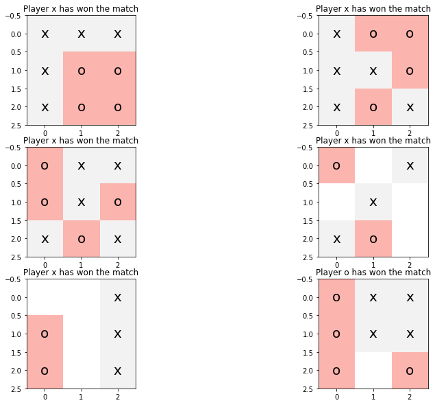
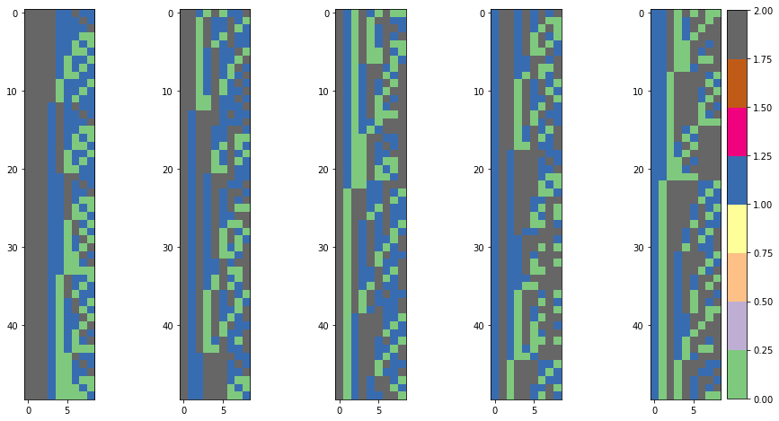
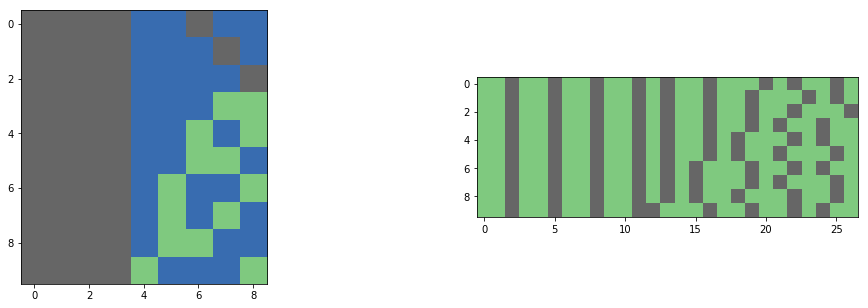

1. Introduction and assumptions
In this post-series, we are going to study the very basic modelling for classification problems with logistic regression algorithms. Classification entails that the output is a discrete variable taking values on a predefined limited set, where the set dimension is the number of classes. Some examples are spam detection, object recognition and topic identification.
We analyzed the theory in the first post, implement the algorithm with Numpy in Part 2 and using Sklearn and Tensorflow in Part 3. We solved a binary classification problem for multivariate non-linear logistic regression in Scikit-learn in Part 4 and extended the analysis to multinomial classification in Part 5. We now have a look at categorical and numerical inputs (predictors) from a simple but funny gaming example: tic-tac-toe.
In this series, we do not split the dataset into training and testing sets, but we assess every model on the training set only. A dedicated post on model selection, overfitting/underfitting problem and regularization will be published soon.
Let’s get started!
2. Categorical predictors
A categorical variable can take on values from two or more categories. There are two types of categorical variable, nominal and ordinal. A nominal variable has no intrinsic ordering to its categories. Some examples are gender (two categories, male and female), citizenship (as many categories as the number of countries in the dataset), capitalized (two categories, either a word is capitalized or it is not).
An ordinal variable has a defined ordering. For example, temperature as a variable with three discrete levels (low, medium and high), movie rating (up to 5 stars).
3. Dataset
We introduce a new dataset from UCI Machine Learning repository website to learn how to handle categorical predictors in a classification problem.
This database encodes the complete set of possible board configurations at the end of tic-tac-toe games, where the x player is assumed to have played first.
The target concept is a win for x, i.e., the response variable is True when x has got one of 8 possible ways to create a three-in-a-row crosses.
The dataset consists of 958 instances of final game board configurations (legal tic-tac-toe endgame boards), filled with 9 attributes, each corresponding to one tic-tac-toe square, as follows (x: first player, o: second player, b: blank):
- top-left-square
- top-middle-square
- top-right-square
- middle-left-square
- middle-middle-square
- middle-right-square
- bottom-left-square
- bottom-middle-square
- bottom-right-square
Each square can take one of the following three values: x, o or b.
The binary problem is slightly skewed to the positive class.
About 65.3% are positive outcomes, i.e., wins for x.
We use Pandas to read in the dataset and we provide full column schema with the names attribute.
import numpy as np
import matplotlib.pyplot as plt
%matplotlib inline
from mpl_toolkits import mplot3d
import pandas as pd
import numpy as np
colNames = ['top-left','top-middle','top-right','middle-left','middle-middle',
'middle-right','bottom-left','bottom-middle','bottom-right','class']
df = pd.read_csv('data/tic-tac-toe.txt', names=colNames)
| TL | TM | TR | ML | MM | MR | BL | BM | BR | class |
|---|---|---|---|---|---|---|---|---|---|
| x | x | x | x | o | o | x | o | o | positive |
| x | x | x | x | o | o | x | x | o | positive |
| x | x | x | x | o | o | x | o | x | positive |
| x | x | x | x | o | o | x | b | b | positive |
| x | x | x | x | o | o | b | o | b | positive |
4. Visualizing the dataset
To have a clear and immediate view of the dataset, we rearrange the column encoding (1 for the x player, 0 for the o player, NaN for a blank position) to a typical tic-tac-toe board.
encoding = {'x': 1, 'o': 0, 'b': np.nan}
span, Nimg = 150, 6
plt.figure(figsize=(14, 10))
for kk, idx in enumerate(range(0, span*(Nimg-1)+1, span)):
example = df.iloc[idx].values
predictors, label = example[:-1], example[-1]
board = predictors.reshape(-1, 3)
plt.subplot(Nimg/2, 2, kk+1)
plt.imshow(np.array([encoding[vv] for vv in predictors]).reshape(-1, 3), cmap='Pastel1')
plt.title('Player {} has won the match'.format('x' if label=='positive' else 'o'))
for rr in range(3):
for cc in range(3):
cellLabel = board[rr, cc]
if cellLabel != 'b':
plt.annotate(str(cellLabel), xy=(cc, rr), horizontalalignment='center', verticalalignment='center', size=20)

We are going to use encoding functions implemented in Sklearn, namely LabelEncoder and OneHotEncoder.
However, Pandas offers the get_dummies method, which makes the procedure to transform the categorical features into dummy variables very straight forward.
It can be directly applied to the dataframe and the internal algorithm will recognize the categorical features.
from sklearn.preprocessing import LabelEncoder, OneHotEncoder
XX = df.values[:,:-1]
YY = df.values[:,-1]
leX = LabelEncoder()
for col in range(XX.shape[-1]):
XX[:, col] = leX.fit_transform(XX[:, col])
leX.classes_
array(['b', 'o', 'x'], dtype=object)
We transform the string-valued predictors into numerical values, ranging from 0 to 2 for the three classes.
We take the numerical predictor array, XX, and we select a window of 50 values every 100 points and plot each window in a dedicated chart.
This representation highlights the different board encoding that the logistic regression model will face identifying the proper winner.
The cell colour encodes whether player x (grey) or player o (blue) has played or the cell is blank (green).
Ncol, window, span = 5, 50, 100
plt.figure(figsize=(15,8))
for cc in range(Ncol):
plt.subplot(1, Ncol, cc+1)
plt.imshow(XX.astype(float)[cc*span:cc*span+window,:], cmap = 'Accent')
if cc == Ncol-1:
plt.colorbar()

5. One-hot encoding
However, this encoding is still not suitable for a machine-learning algorithm to digest, since this numerical encoding comes with intrinsic ordering, which is something we do not want.
There is indeed no reason for the algorithm to believe that an o label should be closer to the x one than the blank position, but the numerical representation says that the distance between the x and o codes is less than that one between the x and b codes, i.e., $|1-2| < |0-2|$.
To this end, we introduce the one-hot encoding to represent the model predictors.
One-hot encoding can be seen as an array with as many elements as the number of distinct classes. All the elements are 0, except the element whose index coincides with the class value. For a categorical variable that can take on 6 values from 0 to 5, the numerical value 4 is transformed into the following array:
$$ (0, 0, 0, 0, 1, 0) $$
ohe = OneHotEncoder(categorical_features = range(XX.shape[1]), sparse=False)
XXohe = ohe.fit_transform(XX)
XXohe.shape
(958, 27)
The figure shows two charts, the left-hand side is the original numerical-labelling representation (player x is grey, player o is blue, blank is green), while the right-hand side is the one-hot encoding representation (1 is grey, 0 is green). The LHS representation stores the board configuration with 9 values, which are unpacked into $9\cdot 3 = 27$ columns since each categorical variable can vary over three discrete values that require three bits each in the one-hot encoding.
window = 10
plt.figure(figsize=(15,8))
plt.subplot(1, 3, 1)
plt.imshow(XX.astype(float)[:window,:], cmap = 'Accent')
plt.subplot(1, 2, 2)
plt.imshow(XXohe[:window,:], cmap = 'Accent')
<matplotlib.image.AxesImage at 0x1ee47191080>

The response variable is also string-valued. We need to create a different instance of label encoder to transform it into a 0-1 array (1 for positive class).
leY = LabelEncoder()
YY = leY.fit_transform(YY) #.reshape(-1,1)
YY[:10]
array([1, 1, 1, 1, 1, 1, 1, 1, 1, 1], dtype=int64)
6. Training a logistic regressor
We feed the one-hot encoded predictor array and the 1D array response variable to the logistic regression Scitkit-learn module and follow the standard procedure.
XXohe.shape, YY.shape
((958, 27), (958,))
from sklearn.linear_model import LogisticRegression
from sklearn import metrics
# categorical features
lgrCF = LogisticRegression(C=1e5) # we want to ignore regularization
lgrCF.fit(XXohe, YY)
Ypred = lgrCF.predict(XXohe)
print("Accuracy: {}".format(metrics.accuracy_score(YY, Ypred)))
print("Precision: {}".format(metrics.precision_score(YY, Ypred)))
print("Recall: {}".format(metrics.recall_score(YY, Ypred)))
Accuracy: 0.9832985386221295
Precision: 0.9750778816199377
Recall: 1.0
The model performance is great, which means it is able to read the final board and declare the winner!